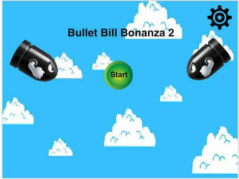
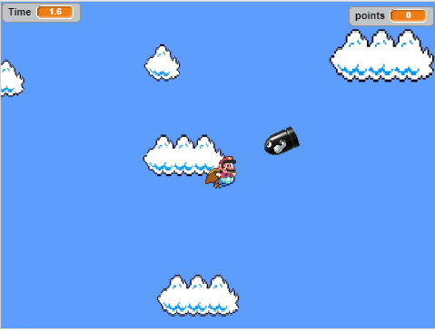

Darren Nguyen's Portfolio
Boku no Hero AcademiaScratch Game
Bullet Bill Bonanza 2 
Description of the Game
The objective of the game is to maneuver around the bullet bills and
other obstacles that appear on the screen. The scoring system that's
implemented into the game is that when you manage to kill the bullet
bills, you earn points. The use of randomness occurs for the spawntime
of the bullet bills and fireballs. The game is difficult to begin with
and it gets exponentially harder as you progress. The game ends if you
touch the bullet bills, fireballs, or if you beat the game. When you
lose, the screen switches to a another screen that tells you that you
died. It also plays a sound to let you know that you died.
Reflection on the game
I made this game in order to challenge people because I feel like
games should be difficult and not easy and mundane. I wanted to create
excitement or frustration in the player because of how they felt if they
were to beat the game or when they died. An inspiration for the game would
most likely be the Dark Souls Trilogy from FromSoftware. This is because
those games are known for their high level of difficulty. Two successful
points during the development of my game was getting the boss fight to
work properly and to get the shooting mechanic during the boss fight to
work properly. Some obstacles that I ran into while developing the game
was figuring out how to get the fireballs to go where the mouse pointer clicked.
This was because the fireballs would shoot, but the fireballs glided across
the screen rather to go to where you clicked. I solved this by making a sprite
that was a dot and made the fireball point towards that sprite. That solved
the problem, surprisingly. Another problem I ran into was getting the lag
to disappear. I found out there was lag while you played the game was because
there were so many sprites on the screen that it caused the game to lag
and potentially freeze. I solved this by making one of the sprites delete
the other sprites if they were touching each other. If I had more time
to work on the game, I'd add more powerups to make the game more interesting
and fun. I'd also make it harder somehow.
The picture above is an algorithm in the game that plays heavily in
removing the lag in the game. How it works is that when the bullet bills
clone themselves, they create duplicates at a very fast rate. Because of
that, there are too many bullet bills filling up the screen to a point
where Scratch can't handle that amount or will lag or freeze. So this
code solves the problem by making it so that if the clones touch each other,
they'll delete themselves in order to clear up space.
Boku no Hero Academia
Our story that me and my friend created was loosely based on the manga with the same name
by Kohei Horikoshi. It's about a boy named Deku who lives in a world full of superheroes.
These superheroes have powers called quirks. Unfortunately, Deku is quirkless,
meaning he doesn't have any superpowers. One day he meets All Might, the strongest
superhero, and he offers Deku to become his successor. You can either take
up the offer or not. The choices that proceed are based on your decisions.
Here is a portion of the flowchart to me and my partner's replit game.
Click on the flowchart if you want to see the flowchart in its entirety.

Development Process
The iterative processes in our program was that the program allowed
users to make the decisions in the game by inputting the letters y and n and the capital
versions of the letters. The program would also not continue if the user were
to type in the wrong input. The program would present them with a message
that said they put in an invalid input. It would then ask them to type in
the right input, which was y or n. The incremental processes of our program
was that we created functions that acted as scenes. Functions allowed it so
that we could organize our code and to make sure the correct scenes play
based on the user's decisions. A minor problem that we ran into while
creating this game was that some scenes weren't playing despite the user
putting in the right input. We later found out that it was because when we
called the function, we spelled the function wrong.
Procedural Abstraction
Organizing our scenes into functions is a form of procedural abstraction
because it made it easier for me and my partner to locate a specific scene
and that we didn't have to keep typing lines of codes. The functions made it so
the lines of code would be compressed to just a word that we could call.
This worked efficiently and saved us lots of time while we were creating the game.
Shoutout
I like to give a shoutout to Brady Truong and Anthony Nguyen for making
Batman's Trilogy. Their game was hilarious and was very unexpected.